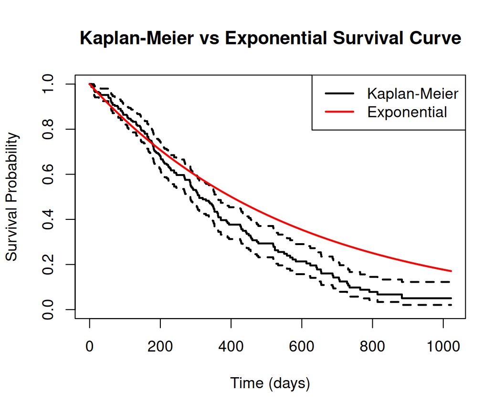
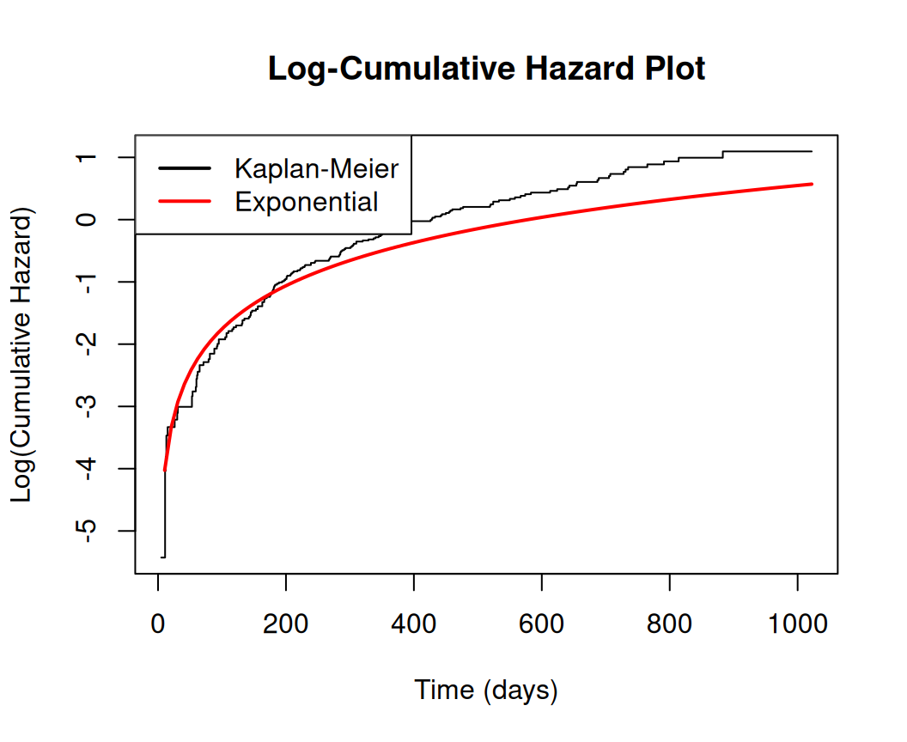
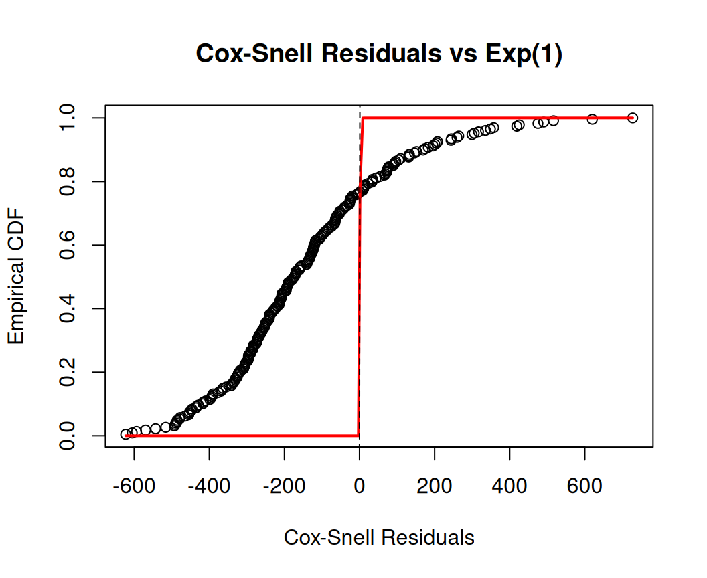

This tutorial introduces the Exponential Model in survival analysis using R. We’ll cover the basics of the model, how to fit it, interpret results, make predictions, and visualize outcomes. The Exponential Model is a parametric approach that assumes a constant hazard rate over time, making it suitable for scenarios where the risk of the event (e.g., failure or death) doesn’t change with time. It’s simple but often too restrictive for real-world data, where hazards may vary.
Overview
The Exponential Model is a fundamental parametric model in survival analysis, assuming a constant hazard rate over time. This makes it simple but restrictive, as it implies the risk of an event (e.g., death, failure) does not change with time. Below, I explain the mathematical forms of the probability density function (PDF), survival function, and hazard function for the Exponential Model, keeping the explanation concise yet comprehensive.
Key Parameter
The Exponential Model is characterized by a single parameter, \(\lambda > 0\), known as the rate parameter (or hazard rate). The mean survival time is \(1/\lambda\), and the model assumes a memoryless property, meaning the probability of an event occurring does not depend on how much time has already passed.
Probability Density Function (PDF)
The PDF describes the probability distribution of the survival time \(T\), a continuous random variable representing the time until the event occurs.
\(f(t)\) gives the probability density of the event occurring at exactly time \(t\).
The exponential decay term \(e^{-\lambda t}\) reflects that longer survival times are less likely.
The parameter \(\lambda\) scales the density, with higher \(\lambda\) indicating a faster decay (shorter survival times).
Survival Function
The survival function \(S(t)\) represents the probability that the event has not occurred by time \(t\), i.e., \(P(T > t)\).
\[
S(t) = e^{-\lambda t}, \quad t \geq 0
\]
Derived from the cumulative distribution function (CDF): \(S(t) = 1 - F(t)\), where \(F(t) = P(T \leq t) = 1 - e^{-\lambda t}\).
\(S(t)\) decreases exponentially, starting at \(S(0) = 1\) (100% survival at \(t = 0\)) and approaching 0 as \(t \to \infty\).
A higher \(\lambda\) leads to a steeper decline, indicating shorter survival times.
Hazard Function
The hazard function \(h(t)\) represents the instantaneous rate of occurrence of the event at time \(t\), given survival up to that time. It is defined as \(h(t) = \frac{f(t)}{S(t)}\).
\[
h(t) = \lambda, \quad t \geq 0
\]
The hazard is constant over time, a hallmark of the exponential model.
This implies the risk of the event (e.g., failure) remains the same regardless of how long the subject has survived.
\(\lambda\) directly represents the hazard rate, e.g., if \(\lambda = 0.01\), there’s a 0.01 probability of the event per unit of time.
Relationships and Derivations
PDF from Hazard and Survival:
\[
f(t) = h(t) \cdot S(t) = \lambda \cdot e^{-\lambda t}
\] - Cumulative Hazard: The cumulative hazard function is \(H(t) = \int_0^t h(u) \, du = \lambda t\). This relates to the survival function via:
\[
S(t) = e^{-H(t)} = e^{-\lambda t}
\] - Mean and Variance:
Mean survival time: \(E[T] = 1/\lambda\).
Variance: \(\text{Var}(T) = 1/\lambda^2\).
Practical Notes
The constant hazard assumption (\(h(t) = \lambda\)) is often unrealistic in practice (e.g., in medical or reliability data, where risks may increase or decrease over time). Thus, the exponential model is best for scenarios like radioactive decay or certain mechanical systems with constant failure rates.
Implementation in R
We’ll use the survival package, which is standard for survival analysis in R. For more advanced parametric modeling, you could explore packages like flexsurv, but we’ll stick to basics here.
Install Required R Packages
Following R packages are required to run this notebook. If any of these packages are not installed, you can install them using the code below:
We’ll use the built-in lung dataset from the survival package for demonstration. This dataset contains survival times for patients with advanced lung cancer. Key variables:
time: Survival time in days.
status: Censoring indicator (1 = censored, 2 = dead; we’ll recode it to 0/1 for standard use).
The Exponential Model can be fit using survreg() from the survival package, which implements an Accelerated Failure Time (AFT) framework. Specify dist = "exponential" for the exponential distribution.
Without Covariates (Intercept-Only Model)
This estimates a single parameter: the constant hazard rate (or equivalently, the scale parameter).
Code
# Fit the modelexp_model <-survreg(surv_object ~1, data = lung, dist ="exponential")# View summarysummary(exp_model)
Call:
survreg(formula = surv_object ~ 1, data = lung, dist = "exponential")
Value Std. Error z p
(Intercept) 6.0445 0.0778 77.6 <2e-16
Scale fixed at 1
Exponential distribution
Loglik(model)= -1162.3 Loglik(intercept only)= -1162.3
Number of Newton-Raphson Iterations: 4
n= 228
Output interpretation:
The Scale parameter is the mean survival time (since exponential mean = 1 / hazard rate).
For exponential, the hazard rate λ = 1 / exp(Intercept).
Log-likelihood and p-values help assess fit.
With Covariates
Let’s include age and sex (1 = male, 2 = female) as predictors. In AFT models, coefficients represent how covariates accelerate or decelerate time.
Code
# Try with starting estimates if convergence failsexp_model_cov<-survreg(Surv(time, status) ~ age + sex, data = lung, dist ="exponential")# View summary summary(exp_model_cov)
Call:
survreg(formula = Surv(time, status) ~ age + sex, data = lung,
dist = "exponential")
Value Std. Error z p
(Intercept) 6.35967 0.63547 10.01 <2e-16
age -0.01562 0.00911 -1.72 0.086
sex 0.48093 0.16709 2.88 0.004
Scale fixed at 1
Exponential distribution
Loglik(model)= -1156.1 Loglik(intercept only)= -1162.3
Chisq= 12.48 on 2 degrees of freedom, p= 0.002
Number of Newton-Raphson Iterations: 4
n= 228
Interpretation:
Coefficients are on the log-scale for time. A positive coefficient means the covariate increases survival time (decelerates failure).
For example, if the coefficient for sex is positive, females have longer survival times.
Hazard ratio for a covariate: exp(-coefficient), since it’s AFT.
To test model significance, use ANOVA or compare to a null model:
Code
anova(exp_model_cov)
Analysis of Deviance Table
distribution with link
Response: Surv(time, status)
Scale fixed at 1
Terms added sequentially (first to last)
Df Deviance Resid. Df -2*LL Pr(>Chi)
NULL 227 2324.7
age 1 3.7804 226 2320.9 0.051855 .
sex 1 8.6978 225 2312.2 0.003186 **
---
Signif. codes: 0 '***' 0.001 '**' 0.01 '*' 0.05 '.' 0.1 ' ' 1
Interpreting the Results
Hazard Function: Constant h(t) = λ = 1 / exp(Intercept) for the null model.
Survival Function: S(t) = exp(-λt).
Confidence Intervals: Extract using confint(exp_model_cov).
Goodness-of-Fit: Compare AIC with other models (e.g., Weibull via dist = "weibull"). Lower AIC indicates better fit.
Code
AIC(exp_model_cov)
[1] 2318.198
If the constant hazard assumption seems violated (check via plots in Step 5), consider more flexible models like Weibull.
Making Predictions
Predict survival times or probabilities.
Predicted Survival Times
For new data or fitted values:
Code
# Prediction for new data (60-year-old male)new_data <-data.frame(age =60-mean(lung$age), sex =1)median_time <-predict(exp_model_cov, newdata = new_data, type ="response")print("Median survival time (days):")
[1] "Median survival time (days):"
Code
print(median_time)
1
971.4902
Survival Probabilities
Use survfit() on the fitted model for curves, or calculate manually.
Code
# Survival probability at t=500 dayssurv_prob <-psurvreg(500, mean =predict(exp_model_cov, newdata = new_data, type ="lp"), scale = exp_model_cov$scale, distribution ="exponential")print("Survival probability at t=500 days:")
[1] "Survival probability at t=500 days:"
Code
print(surv_prob)
[1] 0.4023041
Plotting and Visualization
Visualize to assess fit and communicate results.
Survival Curve
Code
# Fit Kaplan-Meier for comparisonkm_fit <-survfit(surv_object ~1)# Plot KM curveplot(km_fit, main ="Kaplan-Meier vs Exponential Survival Curve", xlab ="Time (days)", ylab ="Survival Probability", col ="black", lwd =2)# Add Weibull curve (null model)t_seq <-seq(0, max(lung$time), length.out =100)lambda <-exp(-coef(exp_model_cov)[1] / exp_model_cov$scale)p <-1/ exp_model_cov$scalesurv_exp <-exp(-(lambda * t_seq)^p)lines(t_seq, surv_exp, col ="red", lwd =2)legend("topright", c("Kaplan-Meier", "Exponential"), col =c("black", "red"), lwd =2)

If the exponential curve deviates much from KM, the assumption may not hold.
Model Diagnostics for the Exponential Model
Diagnostics for the exponential model aim to:
Check the Constant Hazard Assumption
The exponential model assumes a constant hazard rate (\(h(t) = \lambda\)). We can verify this using a log-cumulative hazard plot, where the cumulative hazard \(H(t) = \lambda t\) should be linear.
Code
# 1. Log-Cumulative Hazard Plot (Check constant hazard)km_cumhaz <--log(km_fit$surv)valid <-is.finite(km_cumhaz) & km_fit$surv >0# Exclude Inf and zero survivalif (sum(valid) >0) {plot(km_fit$time[valid], log(km_cumhaz[valid]), type ="s", main ="Log-Cumulative Hazard Plot", xlab ="Time (days)", ylab ="Log(Cumulative Hazard)")lines(t_seq, log(lambda * t_seq), col ="red", lwd =2)legend("topleft", c("Kaplan-Meier", "Exponential"), col =c("black", "red"), lwd =2)} else {warning("No valid data for log-cumulative hazard plot. Check km_fit$surv.")# Fallback: Plot cumulative hazard without logplot(km_fit$time[km_fit$surv >0], km_cumhaz[km_fit$surv >0], type ="s",main ="Cumulative Hazard Plot (Fallback)", xlab ="Time (days)", ylab ="Cumulative Hazard")lines(t_seq, lambda * t_seq, col ="red", lwd =2)}

Residual Analysis
Examine residuals (e.g., Cox-Snell or deviance residuals) to assess model fit and identify outliers or influential points.
Code
# 2. Cox-Snell Residualsresiduals_cs <- (lung$time -predict(exp_model_cov, type ="response")) / exp_model_cov$scaleplot(sort(residuals_cs), (1:length(residuals_cs))/length(residuals_cs), main ="Cox-Snell Residuals vs Exp(1)", xlab ="Cox-Snell Residuals", ylab ="Empirical CDF")lines(sort(residuals_cs), pexp(sort(residuals_cs), rate =1), col ="red", lwd =2)abline(0, 1, lty =2)

Summary and Conclusion
The Exponential Model is a fundamental parametric approach in survival analysis, assuming a constant hazard rate over time. While simple and interpretable, it may not fit all datasets well due to its restrictive assumption. This tutorial covered: - Preparing survival data in R. - Fitting the Exponential Model using survreg(). - Interpreting coefficients and model fit. - Making predictions for survival times and probabilities. - Visualizing survival curves and assessing model assumptions. - Comparing with non-parametric methods like Kaplan-Meier.
For more complex hazard patterns, consider alternative parametric models (e.g., Weibull) or semi-parametric approaches (e.g., Cox model). Always validate assumptions and fit using diagnostics and goodness-of-fit measures. Practice with real datasets to gain proficiency in survival analysis techniques.
Resources
Books
“Survival Analysis: Techniques for Censored and Truncated Data” by Klein & Moeschberger - Covers exponential model theory and R examples. Available on SpringerLink, Amazon.
“Applied Survival Analysis” by Hosmer, Lemeshow, & May - Practical guide with R code for exponential models. Available on Wiley, Amazon.
“Modeling Survival Data” by Therneau & Grambsch - Focuses on R’s survival package. Available on Springer, Amazon.
Online Tutorials
R survival Package Documentation - Details survreg for exponential models. Free at CRAN or vignette("survival").
UCLA IDRE Survival Analysis - Beginner-friendly R tutorial. Link.
DataCamp: Survival Analysis in R - Interactive course with exponential model exercises. Link (subscription may be required).
Papers
“Parametric Survival Models” by Patrick Breheny - Lecture notes with R code. Free at Breheny’s Notes.
Courses/Videos
Coursera: Survival Analysis in R (Imperial College) - Includes exponential model labs. Link (audit free).
YouTube: MarinStatsLectures - Free video tutorials on exponential models in R. Link.
Software-Specific
RPubs Tutorials - Community-driven R code for exponential models. Search “survival analysis exponential” on RPubs.